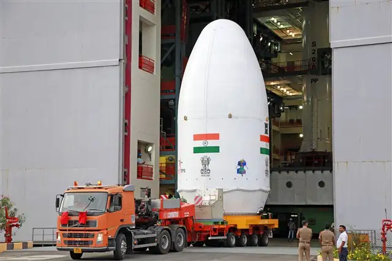
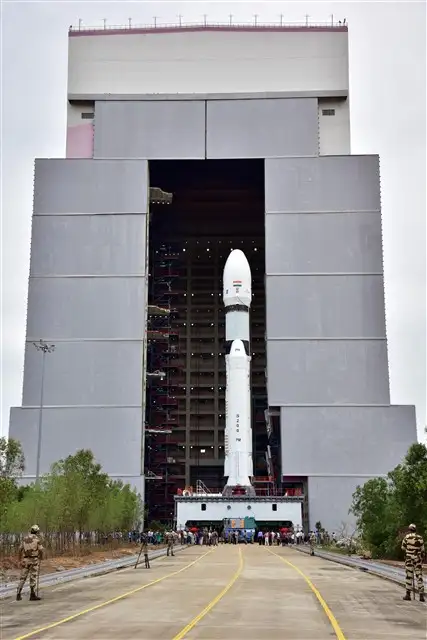
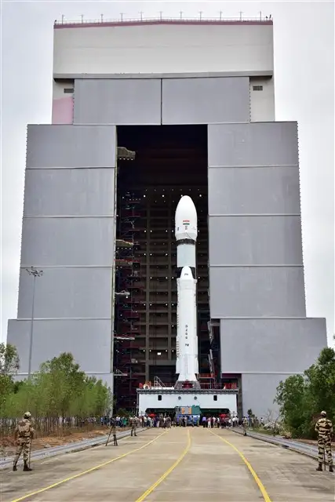
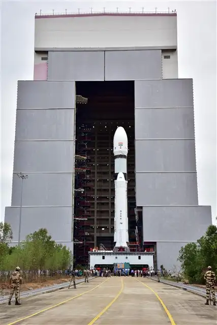

Chandrayaan-3
- Launch Date: 14 July 2023
- Launch Vehicle: LVM3-M4
- Objective: Soft landing on lunar south pole
- Status: Successful

Vikram Lander on the lunar surface

Pragyan Rover deployed by Vikram
Chandrayaan-3 is India’s third lunar exploration mission, designed to demonstrate safe landing and roving on the Moon’s surface, specifically near the lunar south pole. With this mission, India became the first country to land near the Moon’s south pole region.
Mission Plan
- Develop and launch a lander and rover without an orbiter (orbiter from Chandrayaan-2 used for communications).
- Achieve a soft landing on the lunar surface near the south pole.
- Deploy the Pragyan rover for surface exploration.
- Conduct experiments to study lunar soil and environment.
Pre-launch Activities
- Design, assemble, and test the lander (Vikram) and rover (Pragyan).
- Extensive ground tests for landing sequence and surface mobility.
- Integration with LVM3-M4 launch vehicle.
- Final checks, fueling, and transportation to Satish Dhawan Space Centre.

 


Launch
- Launch Date: 14 July 2023, from Satish Dhawan Space Centre, Sriharikota.
- LVM3-M4 performed a successful launch and orbit insertion.
- Series of orbit-raising maneuvers to reach lunar orbit.


On the Moon
- Soft landing achieved on 23 August 2023 near the lunar south pole.
- Vikram lander deployed Pragyan rover, which explored the surface.
- Experiments conducted: composition analysis, seismic activity, thermal properties of lunar soil.
- Transmission of images and data back to Earth.